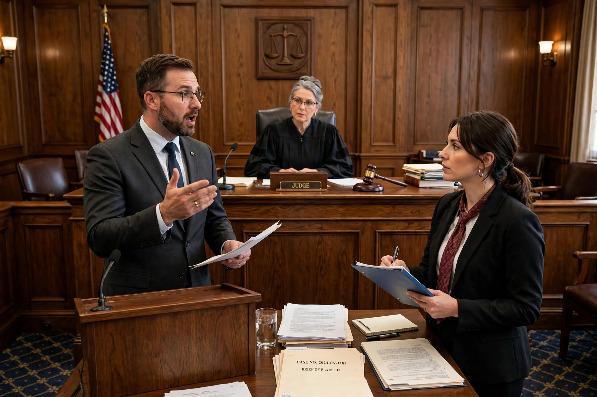

Litigation is the process of resolving disputes by filing or defending a lawsuit in court, as opposed to resolving them through negotiation, mediation or arbitration. The parties to litigation are called litigants; the person or entity bringing the claim is the plaintiff (or claimant), and the one defending is the defendant. Litigation is governed by rules of civil or criminal procedure and typically proceeds through pleadings, discovery or disclosure, trial, judgment and possible appeal.
A case usually begins with pre-action correspondence, then pleadings that define the issues: a complaint or claim form, an answer or defence, and any counterclaims. The court must have jurisdiction over the parties and subject matter — including, where relevant, original jurisdiction in the first instance. Discovery (in the United States) or disclosure (in England and Wales) compels each side to reveal documents and evidence; depositions and interrogatories may follow. Many cases are resolved by motions — for example summary judgment where no genuine factual dispute exists — or by settlement negotiations, which dispose of the large majority of filed claims. Trials that do occur culminate in a judgment, which the losing party may challenge through the appellate courts, sometimes requiring leave to appeal; appellate courts exercise appellate jurisdiction over questions of law.
Civil litigation covers contract, tort (including negligence, where fault may be apportioned under comparative negligence), property, family and commercial disputes, and is generally decided on the balance of probabilities. Criminal litigation is brought by the state, must be proved beyond reasonable doubt, and may result in punishment rather than compensation. Specialised forms include class actions, public interest litigation and complex commercial litigation spanning several jurisdictions.
Litigation is often expensive and slow. Cost rules differ: England and Wales generally shift a portion of the winner's costs to the loser, while the "American rule" leaves each side bearing its own attorneys' fees unless a statute or contract provides otherwise. Funding mechanisms include legal aid, conditional fees, insurance and third-party litigation finance. Litigants in person — unrepresented parties — form a growing share of caseloads in many systems.
Dissatisfaction with cost, delay and adversarialism has driven the growth of alternative dispute resolution: arbitration produces a binding arbitral award enforceable under the New York Convention, while mediation and negotiation aim at consensual settlement. Critics of litigation culture point to opportunistic claims and defensive practices; defenders emphasise litigation's public functions — precedent, accountability and the peaceful channelling of conflict.
See also: Lawsuit, Arbitral award, Appellate jurisdiction, Investor-state dispute settlement.